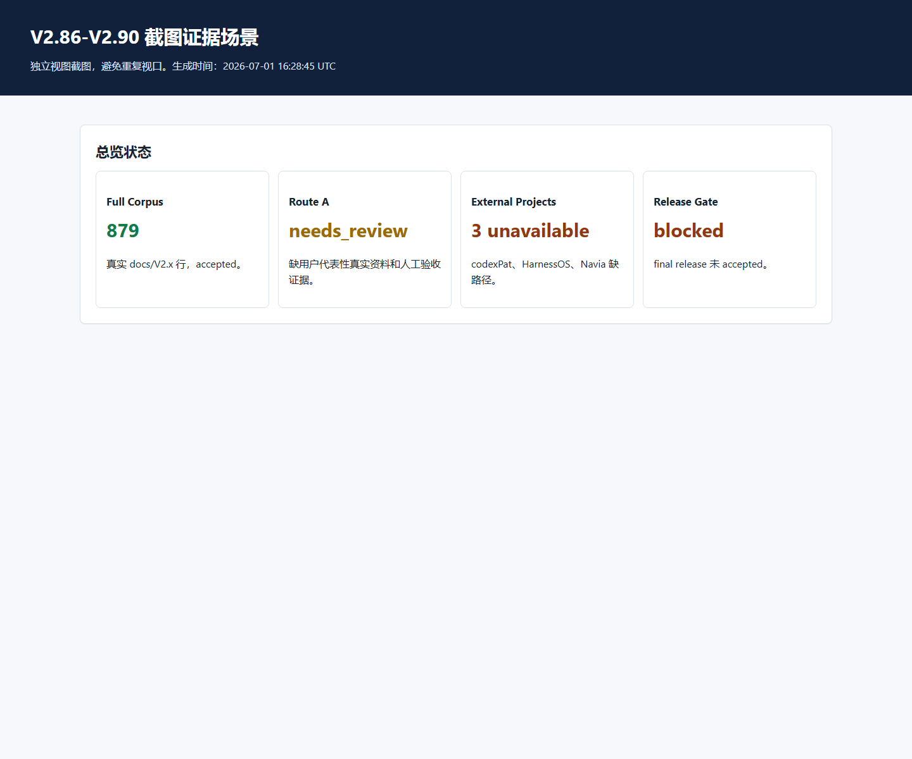
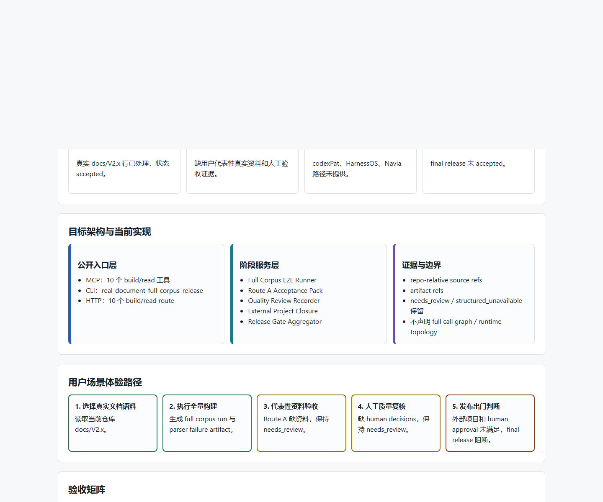
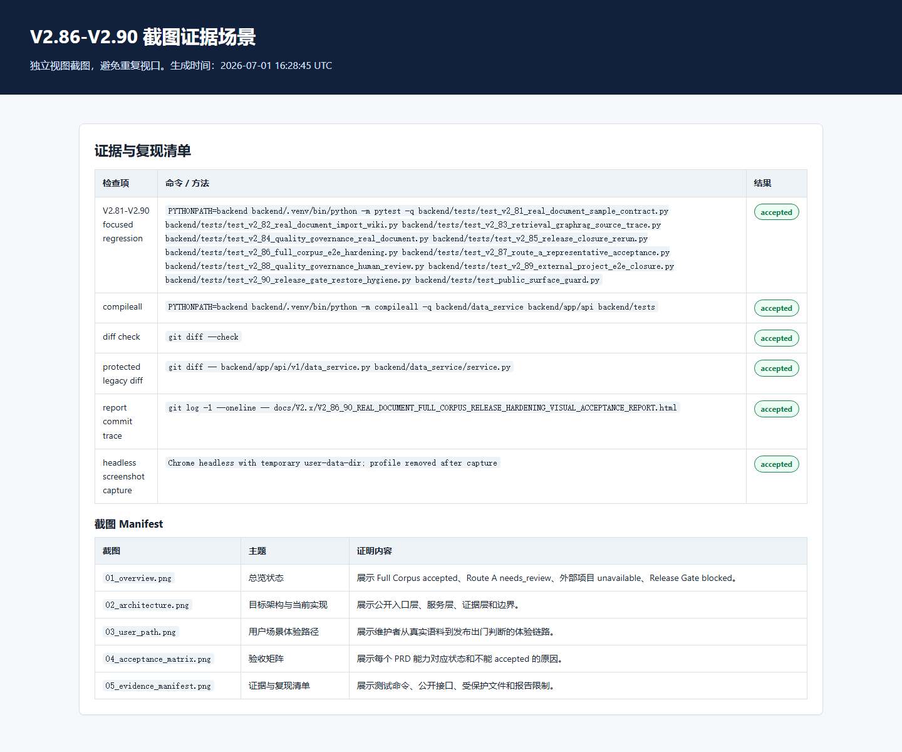

1. 审计总判定
自动化开发范围：通过。 V2.86-V2.90 被文档完整支撑的代码实现、公开接口、focused tests、真实仓库 E2E 和可视化证据已完成。
Final release：未通过出门验收。 Route A 用户代表性资料、人工质量审查、外部项目路径、human approval、restore/dependency hygiene 仍缺真实证据，不能写成 accepted。
Commit
ce1bd6c
https://github.com/ljx418/data_service.git
Full Corpus
879
docs/V2.x real rows, parser failures 0
Release Gate
structured_unavailable
阻断项保留。
False-green
PASS
未将 needs_review / unavailable 写成 accepted。
2. 原始 PRD 覆盖与功能验收
审计依据：V2_86_90_REAL_DOCUMENT_FULL_CORPUS_RELEASE_HARDENING_PRD.md 与目标架构文档。以下矩阵逐项说明实现状态和不能 accepted 的真实原因。
| PRD 能力 | 当前状态 | 证据 / 限制 |
|---|---|---|
| V2.86 Full Corpus E2E Hardening | accepted | 真实 docs/V2.x processed_count=879，parser_failures=0 |
| V2.87 Route A Representative Material Acceptance | needs_review | 缺用户代表性真实资料和人工验收证据；按 PRD 保持 needs_review |
| V2.88 Quality Governance Human Review Closure | needs_review | 缺真实人工 quality decisions；自动建议不能替代人工审查 |
| V2.89 External Project E2E Closure | structured_unavailable | data_service accepted；codexPat/HarnessOS/Navia 缺路径，structured_unavailable |
| V2.90 Release Gate and Restore Hygiene | structured_unavailable | Route A、quality review、external project、human approval、restore/dependency hygiene 未全部 accepted |
3. 目标架构与当前实现
公开入口层
- MCP build/read：10 个工具，全部有 schema。
- HTTP build/read：10 个 route 已注册。
- CLI：
real-document-full-corpus-release已进入 parser inventory。
服务实现层
- Full Corpus E2E Runner
- Route A Acceptance Pack
- Quality Review Recorder
- External Project Closure
- Release Gate Aggregator
证据与边界
- 使用 repo-relative refs 和 artifact refs。
- 保留 needs_review / structured_unavailable。
- 不声明 full call graph、runtime topology、data/control flow、type inference 或完整设计意图恢复。
代码实体审计
| 目标实体 | 实现落点 | 状态 |
|---|---|---|
| Full Corpus E2E Runner | backend/data_service/code_assets/real_document_full_corpus_release/full_corpus.py | accepted |
| Route A Acceptance Pack | backend/data_service/code_assets/real_document_full_corpus_release/route_a_acceptance.py | needs_review |
| Quality Review Recorder | backend/data_service/code_assets/real_document_full_corpus_release/quality_review.py | needs_review |
| External Project Closure | backend/data_service/code_assets/real_document_full_corpus_release/external_project_closure.py | structured_unavailable |
| Release Gate Aggregator | backend/data_service/code_assets/real_document_full_corpus_release/release_gate.py | structured_unavailable |
4. 公开接口审计
MCP tools
| 工具 | schema |
|---|---|
knowledge_code_real_document_full_corpus_release_external_project_build | schema registered |
knowledge_code_real_document_full_corpus_release_external_project_read | schema registered |
knowledge_code_real_document_full_corpus_release_full_corpus_build | schema registered |
knowledge_code_real_document_full_corpus_release_full_corpus_read | schema registered |
knowledge_code_real_document_full_corpus_release_quality_review_build | schema registered |
knowledge_code_real_document_full_corpus_release_quality_review_read | schema registered |
knowledge_code_real_document_full_corpus_release_release_gate_build | schema registered |
knowledge_code_real_document_full_corpus_release_release_gate_read | schema registered |
knowledge_code_real_document_full_corpus_release_route_a_build | schema registered |
knowledge_code_real_document_full_corpus_release_route_a_read | schema registered |
HTTP routes
| 方法 | 路径 |
|---|---|
| GET | /api/workspaces/{workspace_id}/codebases/{codebase_id}/real-document-full-corpus-release/external-project |
| GET | /api/workspaces/{workspace_id}/codebases/{codebase_id}/real-document-full-corpus-release/full-corpus |
| GET | /api/workspaces/{workspace_id}/codebases/{codebase_id}/real-document-full-corpus-release/quality-review |
| GET | /api/workspaces/{workspace_id}/codebases/{codebase_id}/real-document-full-corpus-release/release-gate |
| GET | /api/workspaces/{workspace_id}/codebases/{codebase_id}/real-document-full-corpus-release/route-a |
| POST | /api/workspaces/{workspace_id}/codebases/{codebase_id}/real-document-full-corpus-release/external-project/build |
| POST | /api/workspaces/{workspace_id}/codebases/{codebase_id}/real-document-full-corpus-release/full-corpus/build |
| POST | /api/workspaces/{workspace_id}/codebases/{codebase_id}/real-document-full-corpus-release/quality-review/build |
| POST | /api/workspaces/{workspace_id}/codebases/{codebase_id}/real-document-full-corpus-release/release-gate/build |
| POST | /api/workspaces/{workspace_id}/codebases/{codebase_id}/real-document-full-corpus-release/route-a/build |
5. 自动化命令与复现证据
| 检查项 | 命令 / 方法 | 结果 |
|---|---|---|
| V2.81-V2.90 focused regression | PYTHONPATH=backend backend/.venv/bin/python -m pytest -q backend/tests/test_v2_81_real_document_sample_contract.py backend/tests/test_v2_82_real_document_import_wiki.py backend/tests/test_v2_83_retrieval_graphrag_source_trace.py backend/tests/test_v2_84_quality_governance_real_document.py backend/tests/test_v2_85_release_closure_rerun.py backend/tests/test_v2_86_full_corpus_e2e_hardening.py backend/tests/test_v2_87_route_a_representative_acceptance.py backend/tests/test_v2_88_quality_governance_human_review.py backend/tests/test_v2_89_external_project_e2e_closure.py backend/tests/test_v2_90_release_gate_restore_hygiene.py backend/tests/test_public_surface_guard.py | accepted |
| compileall | PYTHONPATH=backend backend/.venv/bin/python -m compileall -q backend/data_service backend/app/api backend/tests | accepted |
| diff check | git diff --check | accepted |
| protected legacy diff | git diff -- backend/app/api/v1/data_service.py backend/data_service/service.py | accepted |
| headless screenshot capture | Chrome headless with temporary user-data-dir; profile removed after capture | accepted |
受保护 legacy 文件 backend/app/api/v1/data_service.py 与 backend/data_service/service.py 无 diff。
6. 外部项目与 Release Gate 阻断项
外部项目
| 项目 | 状态 | 执行 |
|---|---|---|
| data_service | accepted | focused real E2E smoke |
| codexPat | structured_unavailable | not-run |
| HarnessOS | structured_unavailable | not-run |
| Navia | structured_unavailable | not-run |
Release Gate
| 检查项 | 状态 | 阻断原因 |
|---|---|---|
| route_a | needs_review | Route A user representative real materials or manual acceptance evidence are not complete |
| route_b | accepted | 证据完整或无阻断 |
| full_corpus | accepted | 证据完整或无阻断 |
| quality_review | needs_review | human decision is required for quality recommendation; human decision is required for quality recommendation |
| external_project | structured_unavailable | codexPat real readable path is not provided; HarnessOS real readable path is not provided; Navia real readable path is not provided |
| human_approval | needs_review | human_approval is not accepted |
| restore_smoke | needs_review | restore_smoke is not accepted |
| dependency_hygiene | needs_review | dependency_hygiene is not accepted |
7. 文档一致性与修复说明
- 本报告修复了旧报告可审计性不足的问题：加入 PRD 覆盖、代码实体、公开接口、命令复现、阻断项和截图 manifest。
- 本轮真实 E2E 重新执行后 full corpus 数量为 879，当前报告以本轮重新验收结果为准，避免沿用早期运行值。
- V2.89 payload 字段经真实检查为
project_e2e_records.records，报告不再使用错误字段名。 - 所有 non-accepted 状态在报告和 release gate 中保留，未美化为 accepted。
- 文档描述 / documentation claim 不当作 code fact；报告不声明 full call graph、runtime topology、data/control flow、type inference 或完整设计意图恢复。
8. 截图证据 Manifest
| 截图 | 主题 | 证明内容 |
|---|---|---|
01_overview.png | 总览状态 | 展示 Full Corpus accepted、Route A needs_review、外部项目 unavailable、Release Gate blocked。 |
02_architecture.png | 目标架构与当前实现 | 展示公开入口层、服务层、证据层和边界。 |
03_user_path.png | 用户场景体验路径 | 展示维护者从真实语料到发布出门判断的体验链路。 |
04_acceptance_matrix.png | 验收矩阵 | 展示每个 PRD 能力对应状态和不能 accepted 的原因。 |
05_evidence_manifest.png | 证据与复现清单 | 展示测试命令、公开接口、受保护文件和报告限制。 |





9. 人类复核步骤
- 从第 2 节核对每个 PRD 能力是否有实现状态和阻断原因。
- 从第 3-4 节核对代码实体和 MCP/CLI/HTTP surface 是否存在。
- 从第 5 节复跑命令，确认测试、compileall、diff check 与受保护文件检查。
- 从第 6 节确认 final release 未 accepted 的原因是否真实保留。
- 查看第 8 节截图，确认图像与报告结论一致且不是重复截图。
10. 最终审计评价
报告质量：修复后通过。 当前 HTML 报告具备可读性、可复现命令、截图证据、代码实体清单、接口清单、PRD 覆盖矩阵和 false-green 边界，可支持人类完整审计本阶段自动化开发工作。
项目状态：自动化实现范围 accepted；final release not accepted。